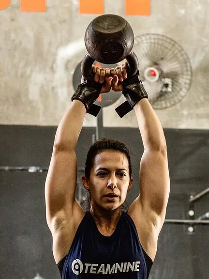
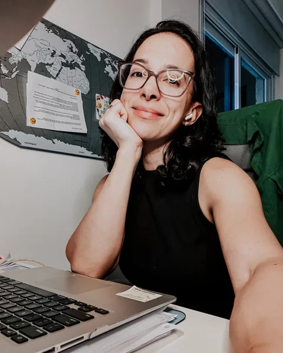

Sobre a Ana
Eu mudei de rota aos 30. Hoje ajudo mulheres a acertar o prato de cada fase.
Sou Ana Paula Costa, nutricionista. Atendo online gestantes, mães no pós-parto e mulheres de 40 anos em diante, no climatério e na menopausa. Sem alimento vilão, sem dieta radical, com um plano que cabe na vida real.
Atendimento online, por vídeo. Na Avaliação da Fase, valores e formas de pagamento são informados no agendamento.
Ana Paula CostaNutricionistaCRN em confirmação
1Capítulo 1
Antes da nutrição, teve navio
Em 2006 eu comecei a estudar na Marinha Mercante. Me formei, embarquei e trabalhei no mar. Pilotei navio. Em alguns embarques, eu era a única mulher a bordo.
Foi lá que conheci meu marido. E foi lá que aprendi três coisas que uso até hoje com as minhas pacientes: rotina não se negocia, planejamento evita sufoco e ninguém chega longe na pressa.
No mar, ninguém muda de rota no grito. A gente corrige um pouco de cada vez, todo dia. Com o prato é igual.
Você não precisa ser radical. Basta ser consistente.
2Capítulo 2
Aos 30, eu larguei tudo e voltei para a faculdade
Eu sempre me cuidei. Comida, treino, sono. Aos 30 anos, decidi largar tudo e fazer uma nova faculdade: Nutrição.
Comecei em ano em confirmação e me formei em 2024. Não vou te dizer que tenho décadas de consultório, porque não tenho. O que eu tenho é uma escolha feita com maturidade, muito estudo e uma vida inteira antes da Nutrição me ensinando que disciplina só funciona quando dá para manter.
Moro no Rio, onde me formei com o Pão de Açúcar de testemunha. Mas atendo online, por vídeo. Então você pode estar em qualquer cidade do Brasil.
3Capítulo 3
Mãe de dois, atleta e nutricionista. A ordem muda conforme o dia.
Sou mãe do Tomás e do Antônio.Sou mãe de dois meninos. Passei por duas gestações e dois pós-partos: o primeiro ainda na faculdade, o segundo já atendendo. Sei o que é comer com um no colo e o outro chamando. Sei o que é o cansaço que ninguém vê. E sei o que é olhar no espelho e ter que reaprender a cuidar do próprio corpo.
Treino crossfit há anos e segui treinando nas gestações. No pós-parto, voltei aos poucos. Voltar a treinar não é sobre recuperar quem eu era. É descobrir a força de quem eu me tornei.
E, sim, eu cozinho de verdade. Aqui em casa a receita saudável costuma ganhar um ajudante que mais atrapalha do que ajuda. Faz parte.
Minha fé é o que sustenta a minha rotina.


Produtividade não é fazer tudo sozinha. É fazer o que é possível em cada fase da vida.
O caminho até aqui
Uma rota com algumas curvas
- 2006Começo na Marinha Mercante. Formação, embarques e navio pilotado.
- Aos 30A virada: início da faculdade de Nutrição.
- 2020Programa de coaching em nutrição integrativa certificado em confirmação
- 2023Nasce o Tomás. Minha primeira gestação vivida como estudante de Nutrição.
- 2024Formada em Nutrição. Imersão em nutrição comportamental certificado em confirmação
- 2026Nasce o Antônio. Segundo pós-parto, agora já atendendo.
- HojeAtendimento online para mulheres em cada fase: gestação, pós-parto, 40+ e menopausa.
O que eu acredito
Cada fase pede outro prato
O que serviu para você aos 25 não precisa servir na gestação, no pós-parto ou aos 50. Não é falta de força de vontade. É que a fase mudou, e o prato precisa mudar junto.
Não existe alimento vilão.
Vilão é o Coringa, o Darth Vader, o Hannibal Lecter. Vilões, vamos deixar para o cinema. Na mesa, o que importa é contexto, quantidade e frequência. Sim, dá para comer chocolate.
Constância vale mais do que radicalismo.
Qual a melhor dieta? Disciplina. Fazer as pequenas coisas, da forma correta, repetidas vezes.
Nutrição não é uma coleção de proibições.
Plano bom é o que cabe na sua rotina, no seu bolso e na sua cozinha. Se não cabe, a gente ajusta.
Seu corpo não falhou.
Gestação, pós-parto, climatério e menopausa não são perdas. São transições. E cada transição pede outro cuidado.
Nenhuma mulher é dose única.
A mesma orientação para todas não enxerga ninguém. Por isso eu começo ouvindo a sua fase, a sua rotina e os seus exames.
O amor também se serve à mesa.
Cuidar da sua alimentação é cuidar de quem senta à mesa com você.
Arrume o seu prato. Ana
Nutrição por Fases
Quem eu atendo
Eu chamo o meu jeito de trabalhar de Nutrição por Fases. Primeiro eu entendo em que momento da vida você está. Depois monto um plano para esse momento, e não para uma mulher genérica.
-
Gestação
Para você que quer comer bem por você e pelo bebê, mesmo com enjoo, com o suplemento de ferro pesando no estômago ou com a glicemia no radar.
-
Pós-parto e amamentação
Para você que quer energia e quer voltar a se cuidar, sem dieta radical e no tempo do seu corpo.
-
40+, climatério e menopausa
Para você que sente que o corpo mudou, já ouviu que “é da idade” e quer ser ouvida de verdade.
Como funciona
- Atendimento 100% online, por vídeo.
- Plano entregue no aplicativo, com suplementação individualizada quando for o caso.
- Suporte pelo WhatsApp no período combinado do seu atendimento.
- Nota fiscal para você pedir reembolso ao seu plano de saúde, conforme as regras do seu plano.
- Pix ou cartão em até 10x.
Abro poucas vagas por mês para conseguir acompanhar cada uma de perto. Não atendo crianças. Quando o assunto é introdução alimentar, eu cuido da mãe que está passando por essa fase.
Ver como funcionam a Avaliação da Fase e o Acompanhamento da Fase 90 dias
Formação
Formação e registro profissional
Atendimento online conforme as regras do Conselho Federal de Nutricionistas para teleconsulta.
- Graduação em Nutrição
- instituição em confirmaçãoconcluída em 2024
- Registro profissional
- CRN em confirmação
Cursos livres (formação complementar)
- Programa de coaching em nutrição integrativa
- instituição em confirmação2020certificado em confirmação
- Imersão em nutrição comportamental
- instituição em confirmação2024certificado em confirmação
- Congressos e atualizações
- lista em confirmação
Experiência de quem já passou por aqui
Como é ser acompanhada pela Ana
Próximo passo
Qual é a sua fase agora?
Me conta em que momento você está. Na Avaliação da Fase, a gente olha a sua rotina, os seus exames e o que cabe na sua vida hoje. Você recebe um plano para essa fase, e eu sigo com você pelo WhatsApp nos 30 dias seguintes.
Agendar minha avaliaçãoAtendimento online, por vídeo. Valores e formas de pagamento informados no agendamento. Pix ou cartão em até 10x. Nota fiscal para pedir reembolso ao seu plano de saúde.
Ainda não é hora de consulta? Tudo bem. Dá para começar mais leve: